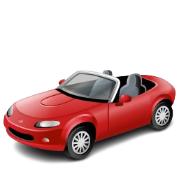
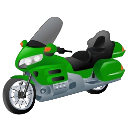

CALKILOMETRO
La plataforma inteligente
para el transporte independiente
Compara rutas • estima tarifas • viaja mejor
Selecciona tu perfil


CONDUCTOR
Medición GPS inteligente de tus viajes.
PASAJERO
Calcula tu tarifa antes de viajar.
V3.1 · CALKILOMETRO
CALKILOMETRO
CONDUCTOR
RESET
Ciudad
Bucaramanga
Bogotá
Medellín
Cali
Barranquilla
CARRO
MOTO
BASE (COP)
POR KM (COP)
POR MIN (COP)
MINIMA (COP)
TARIFA TOTAL A PAGAR
$
4.500
COP
0.00
km
⏸ DETENIDO
▶ INICIAR
⏹ DETENER
DISTANCIA
0.00 km
TOTAL COBRADO
$0 COP
← CAMBIAR MODO
CALKILOMETRO
PASAJERO
EN QUE VEHICULO VIAJARAS?
CARRO
MOTO
Ciudad
Bucaramanga
Bogotá
Medellín
Cali
Barranquilla
Otra
A DONDE QUIERES VIAJAR?
ORIGEN
DESTINO
Sin conexion — ingresa distancia manualmente
DISTANCIA (km)
km
TIEMPO (min)
min
CALCULAR TARIFA
Obteniendo ubicacion...
ESTIMACION APROXIMADA
$0
COP
Rango: $0 — $0 COP
CARRO
$0
—
MOTO
$0
—
Distancia
0 km
Duracion
0 min
Vel. media
0 km/h
Valor estimado. La tarifa real puede variar segun trafico, ruta y recargos del conductor.
← CAMBIAR MODO